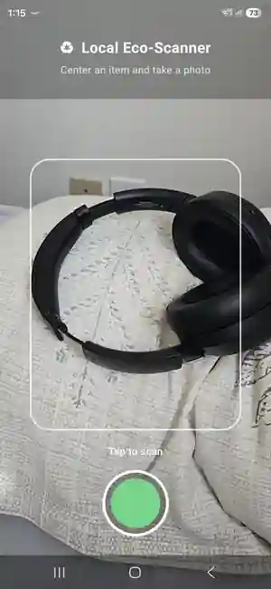
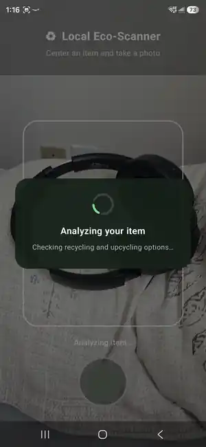
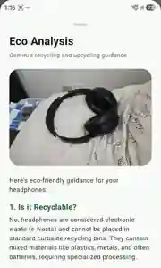
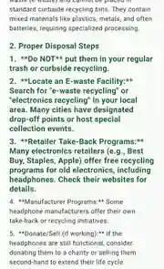
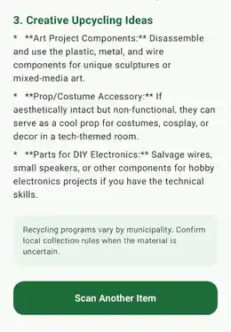

01 / overview
Make recycling guidance more relevant than object recognition alone.
Recycling rules vary by municipality and residence type. Local Eco-Scanner adds that local context to the image-analysis pipeline so the result is framed around where the user lives, not just what the camera sees.
Camera-based Android experience with onboarding, local profile persistence, scanning, and structured results.
Province, municipality, postal code, and residence type are included in the AI context.
The interface reminds users that AI guidance is not a substitute for current municipal instructions.
02 / architecture
A mobile-first multimodal pipeline.
The app keeps the user profile on-device, preprocesses the captured image, then sends both image and local context to Gemini before presenting structured guidance.
The important architectural choice is that object understanding and local context meet at the AI request, while the profile itself remains stored locally on the device.
03 / flow
From onboarding to actionable guidance.
The product flow minimizes setup after the first launch and keeps the scan interaction short.
Choose province, municipality, postal code, and residence type.
CameraX takes a single-item photo after permission is granted.
Correct orientation and resize large captures before upload.
Gemini receives both the image and the saved local profile.
Show recyclability, disposal steps, and upcycling ideas.
04 / real product
Actual app screens from the installed Android APK.
These are real on-device screenshots from a working scan of headphones - not mockups. They show the complete product interaction from framing the object, through Gemini analysis, to the final recycling, disposal, and upcycling guidance.

CameraX presents a focused capture area and a single scan action.

The UI communicates that recycling and upcycling guidance is being generated.



The real result screen separates recyclability, disposal steps, creative reuse ideas, and a municipal-rules reminder.
proof_of_build() These screenshots demonstrate the working Android experience running on a physical device. The portfolio uses web-optimized copies of the original on-device captures.
05 / decisions
Key engineering decisions
- Context before classification - the application asks for local context because disposal guidance without municipality information can be misleading.
- On-device profile persistence - SharedPreferences avoids unnecessary account infrastructure for a lightweight MVP.
- Image resizing before inference - limiting the longest dimension reduces payload size without changing the core scan experience.
- Explicit uncertainty - the prompt and UI avoid presenting uncertain municipal rules as authoritative facts.
The MVP is not grounded in a live authoritative municipal dataset, and the Gemini key is compiled into the app configuration. A production version should move sensitive access behind a backend and ground local rules in authoritative sources.
06 / stack